Welcome to STA 101!
Lecture 0
What are we studying?
. . .
- Transforming messy, incomplete, imperfect data into knowledge;
- Knowledge often takes the form of pictures and a concise set of numerical summaries.
. . .
Quantifying our uncertainty about that knowledge. How reliable is it?
Imagine this dialog
. . .
Campaign manager: What share of the popular vote do we think our candidate will receive?
. . .
(A flurry of analysis takes place.)
. . .
Data scientist: Our best guess is 54%.
. . .
Campaign manager: How reliable is that estimate? How confident are we in that? What’s the margin of error?
. . .
Parallel Universe 1
Data scientist: It’s 54% give or take 3%.
Parallel Universe 2
Data scientist: It’s 54% give or take 20%.
. . .
The manager is going to make wildly different decisions about campaign spending and strategy depending on how uncertain the environment is. Therefore, it pays to know what you’re dealing with. Statistics can help!
A brief history of intro stat
A Portrait of the Instructor as a Young Man
Back in Spring 2014…
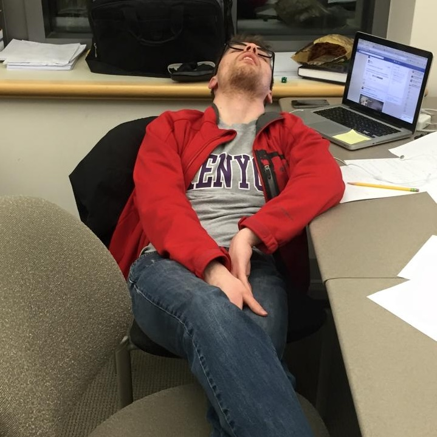
Why did it fail to thrill me?
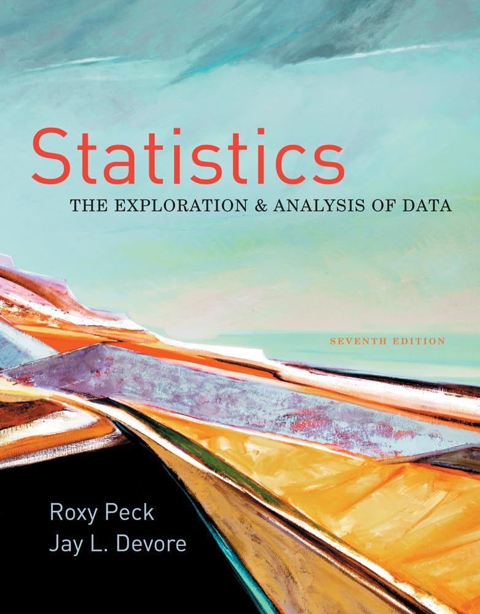
- Big heavy book that cost $250.00;
- Weird point-and-click spreadsheet thing
that no one uses.
Much has changed
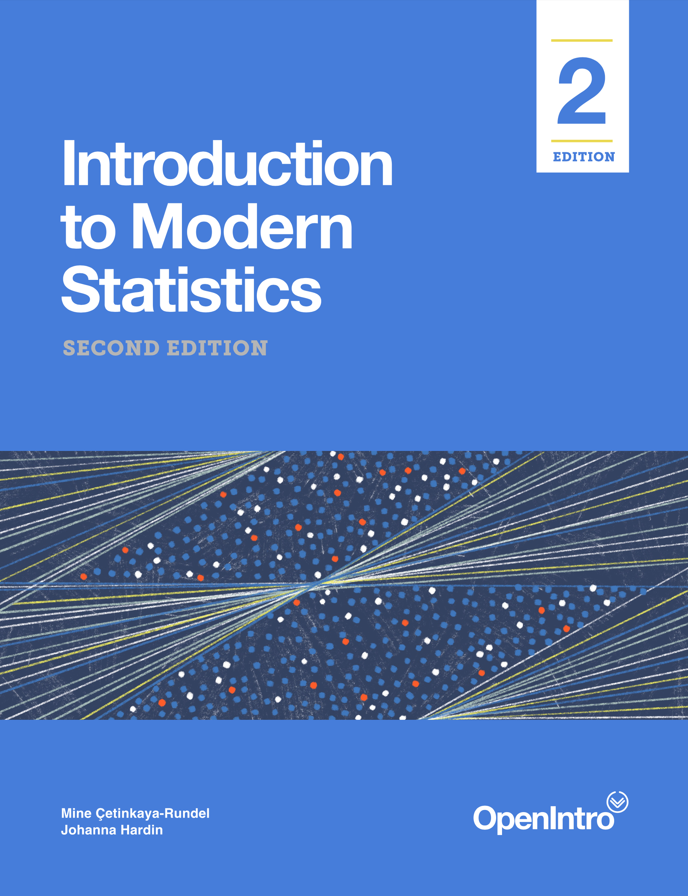

- Flexible, simulation-based approach to inference ($0.00);
- Software that people have actually heard of ($0.00).
The ladder
Every new idea will be introduced
words, pictures, code (simulations and real data), math
it’s not one way, these are mutually reinforcing. Some of you may go all the way on every topics. Sometimes you might stop short. That’s okay!
Do what you can do, at the pace you can do it
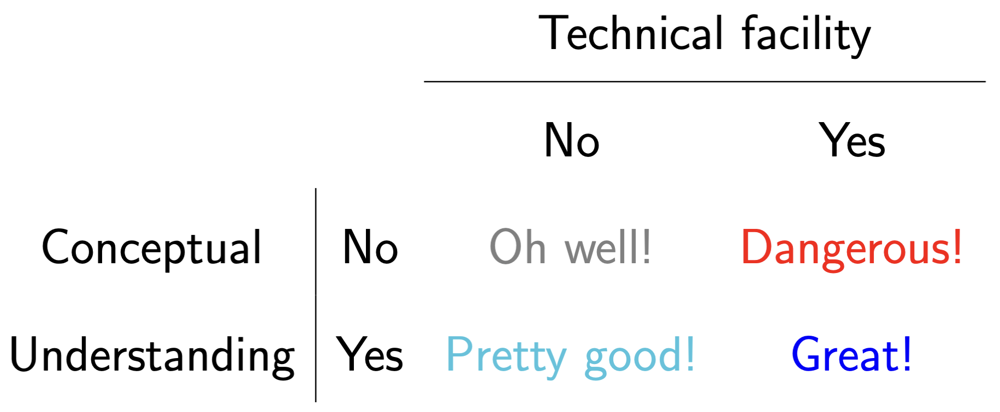
Syllabus highlights
Bookmark the homepage!
Bookmark the course page!
Course toolkit
Grading
Your final course grade will be calculated as follows:
| Category | Percentage |
|---|---|
| Labs | 10% |
| Homeworks | 20% |
| Project | 20% |
| Midterm Exam | 25% |
| Final exam | 25% |
The final letter grade is based on the usual thresholds.
. . .
No curve, no rounding, no extra credit.
Wiggle room
- 10 labs in total, and we drop the lowest 2;
- 8 homeworks in total, and we drop the lowest 1;
- We replace your midterm score with your final score (if it’s better).
Lab
Homework
Project
Exam
Attendance
- Lecture: not required. Live your life;
- Lab: required for credit. You can’t leave your group hanging.
Communication
If you wish to ask questions in writing…
Post on Ed: about general course policies and content;
Email JZ directly: personal matters.
You should not really be emailing the TAs directly for any reason.
Collaboration
You are enthusiastically encouraged to work together on labs and problem sets. You will learn a lot from each other! Two policies:
- ✅ Acknowledge your collaborators: “Aloysius, Cybill, and I worked together on this problem;”
- ❌ Do not outright share or copy solutions. All submitted work must be your own.
Violation of the second policy is plagiarism. Sharers and recipients alike are referred to the conduct office and receive zeros.
Use of outside resources, including AI
FAQ: 101 vs 198 vs 199?
Questions?
A game
How old is this person?
Ethel Merman
Ethel Merman
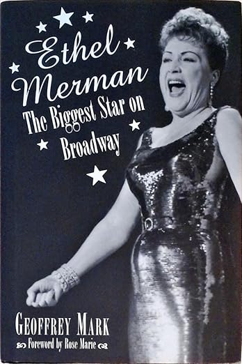
| Born | January 16, 1908 |
| Died | February 15, 1984 |
| Age | 76 |
| Claim to fame | JZ’s favorite singer |
How old is this person?
Megan Pete
Megan Thee Stallion
| Born | February 15, 1995 |
| Age | 30 |
| Claim to fame | Rapper |
How old is this person?
봉준호
Bong Joon-ho
| Born | September 14, 1969 |
| Age | 56 |
| Claim to fame | Directed Parasite, Snowpiercer, etc |
Now do it with pictures…
When the picture was taken, how old was the person?
Let’s see how you did
Baby’s first spreadsheet
# A tibble: 299 × 6
celeb1 celeb2 celeb3 celeb4 celeb5 celeb6
<dbl> <dbl> <dbl> <dbl> <dbl> <dbl>
1 32 26 73 68 50 78
2 22 42 75 55 35 77
3 22 31 79 40 43 68
4 30 28 65 40 45 70
5 35 39 67 54 49 60
6 30 48 67 37 45 70
7 49 42 78 47 62 75
8 28 35 70 50 60 70
9 31 36 62 43 41 68
10 26 33 67 60 42 71
# ℹ 289 more rowsComment on rows and columns
Anyone know who this is?
Yuja Wang
| Born | 2/10/1987 |
| Age in pic | 36 |
| Claim to fame | Classical pianist |
Baby’s first dataviz
Baby’s first dataviz
ggplot(age_guesses, aes(x = celeb1)) +
geom_histogram()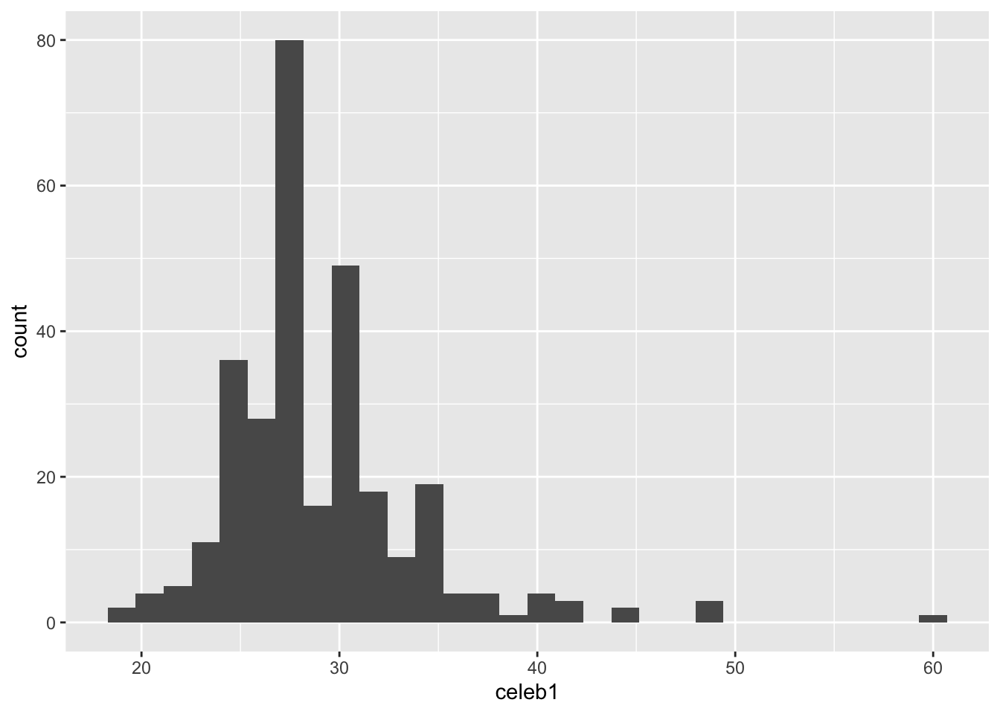
Baby’s first dataviz
ggplot(age_guesses, aes(x = celeb1)) +
geom_histogram() +
xlim(0, 100)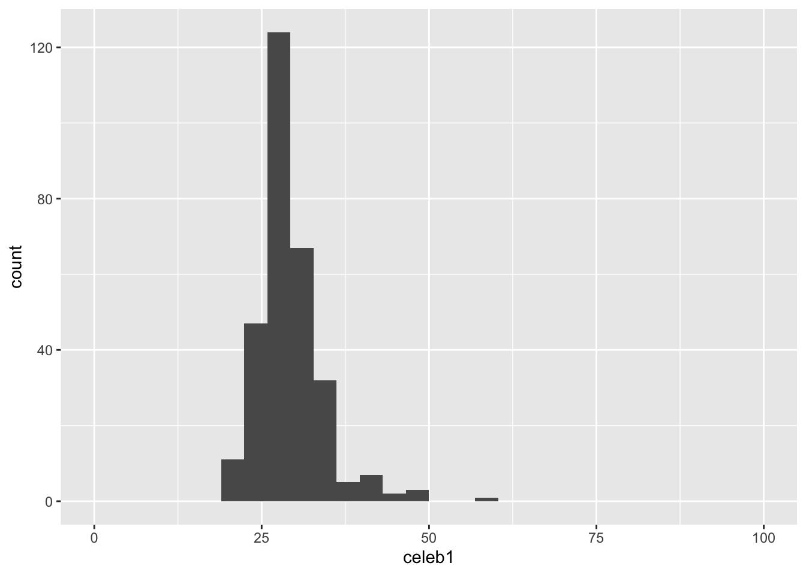
Baby’s first dataviz
ggplot(age_guesses, aes(x = celeb1)) +
geom_histogram() +
xlim(0, 100) +
labs(title = "sta101-f26 students guess Yuja Wang's age",
x = "Guess")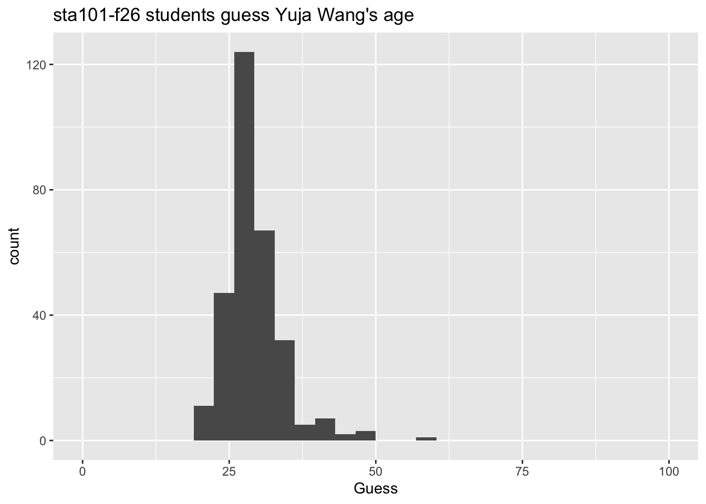
Baby’s first dataviz
ggplot(age_guesses, aes(x = celeb1)) +
geom_histogram() +
xlim(0, 100) +
labs(title = "sta101-f26 students guess Yuja Wang's age",
x = "Guess") +
geom_vline(xintercept = 36, color = "red")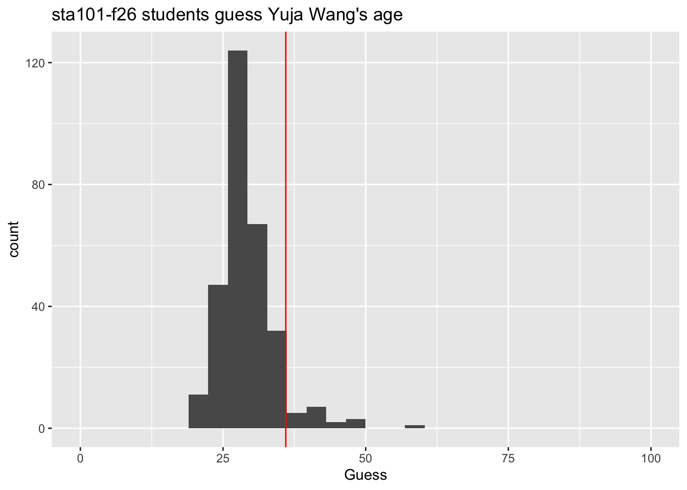
Concise numerical summaries
Where are your guesses concentrated? How spread out are they?
# A tibble: 1 × 2
average sdev
<dbl> <dbl>
1 29.1 5.01mean and standard deviation
DEBRIEF
memorialize some basic facts about data frames, histograms, and summaries that we will return to
Anyone know who this is?
Joan Crawford (replace with Charo! renaissance woman)
A secret she took to her grave:
| Born | 3/23/(1904 - 1908) |
| Died | 5/10/1977 |
| Age in pic | 38 - 42 |
| Claim to fame | Oscar-winning actor |
Joan Crawford
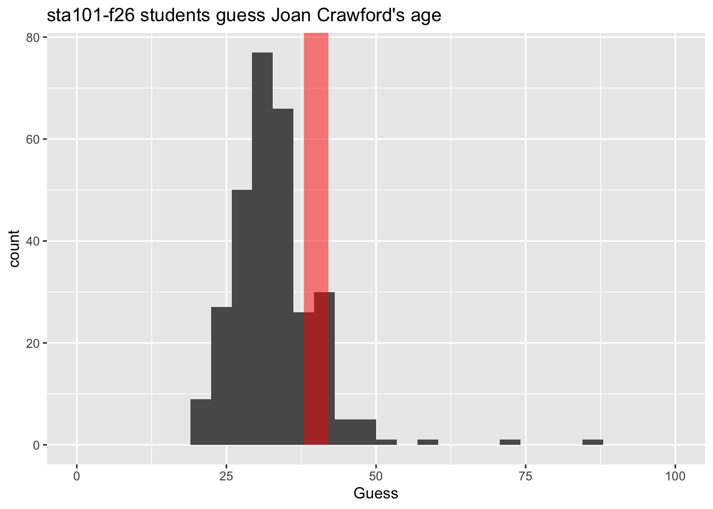
Anyone know who this is?
Eubie Blake
His actual birthday was not known at the time:
| Born | 2/7/1887 |
| Died | 2/12/1983 |
| Age in pic | 82 |
| Claim to fame | Composer |
Eubie Blake
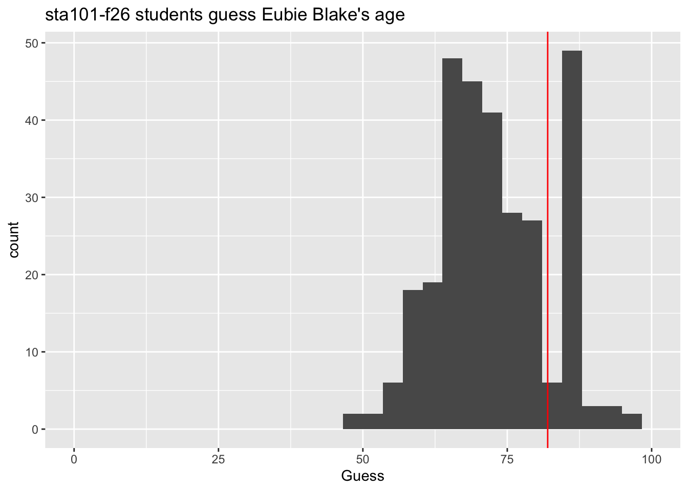
Watch out for data quality!
Raghuram Rajan
| Born | 2/3/1963 |
| Age in pic | 48 |
| Claim to fame | UChicago economist |
| RBI governor |
Raghuram Rajan
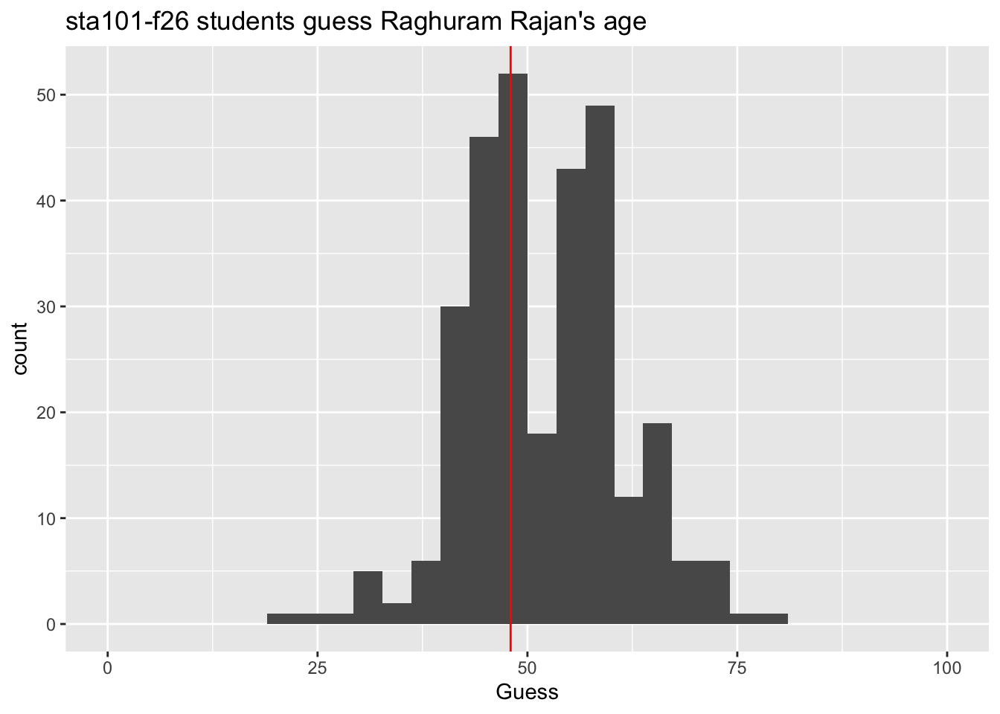
Anyone know who this is?
Vincent Price
Vincent Price
| Born | 5/27/1911 |
| Died | 10/25/1993 |
| Age in pic | 38 - 39 |
| Claim to fame | Horror actor |
Vincent Price
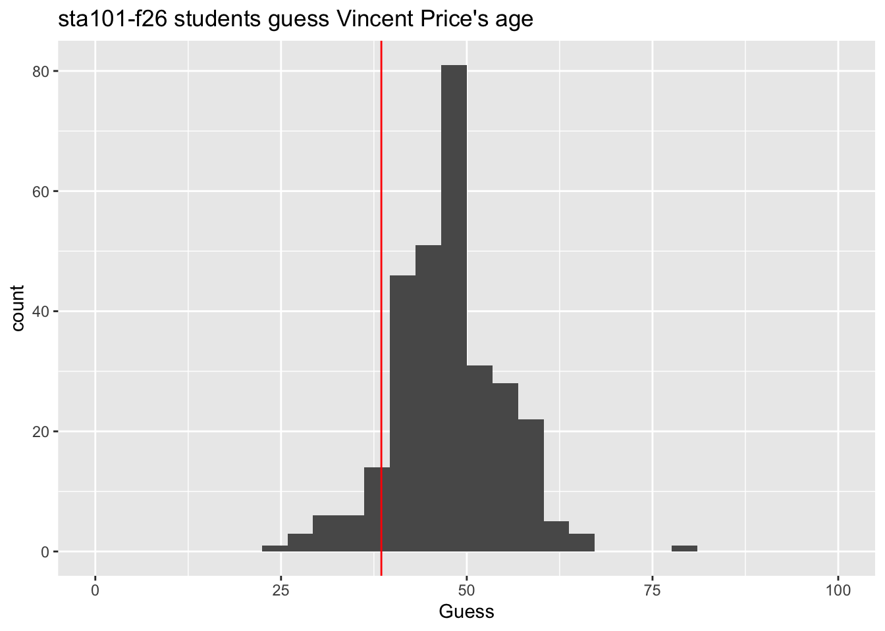
Anyone know who this is?
Celia Cruz
| Born | 10/21/1925 |
| Died | 7/16/2003 |
| Age in pic | 76 |
| Claim to fame | Queen of Salsa |
Celia Cruz
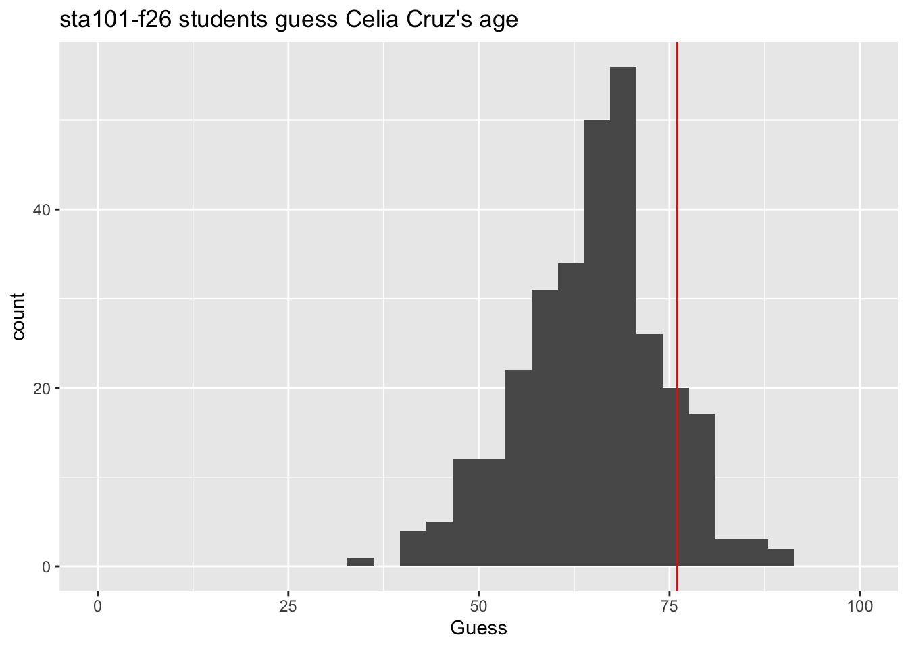
Who guessed best?
| Your name | celeb1 | celeb2 | celeb3 | celeb4 | celeb5 | celeb6 | sqerror |
|---|---|---|---|---|---|---|---|
| (answers) | 36 | 40 | 82 | 48 | 38.5 | 76 | 0.00000 |
| Haleeyah Adesina | 35 | 42 | 73 | 57 | 39.0 | 72 | 30.54167 |
| Sam Grossman | 35 | 30 | 86 | 45 | 45.0 | 70 | 34.04167 |
| Max Hill | 31 | 42 | 71 | 49 | 42.0 | 68 | 37.87500 |
| Jessica Herrera Salinas | 25 | 35 | 86 | 50 | 48.0 | 73 | 44.20833 |
| Rameen Janjua | 32 | 33 | 76 | 52 | 47.0 | 67 | 45.04167 |
| Benjamin Palmer | 35 | 30 | 79 | 59 | 45.0 | 78 | 46.20833 |
Silly exercise; serious themes
-
Domain knowledge and modeling assumptions: data do not speak for themselves. You need some subject-matter expertise about what you’re studying, as well as an interpretive lens;
- Not all models or assumptions are created equal!
Are you asking questions the data can actually answer?
Uncertainty has many sources, and in some cases, it may be simply irreducible, no matter how hard you try;
Data quality and data cleaning: Data are not gospel. There could be noise and mistakes. Then what?
Wisdom of crowds: aggregating many imperfect guesses can do better than any one individual guess.